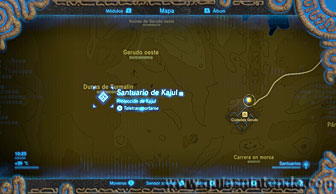
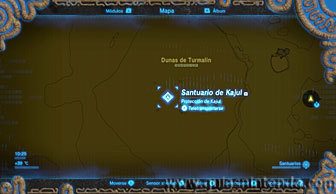
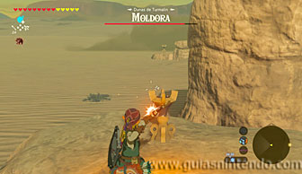
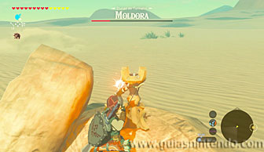
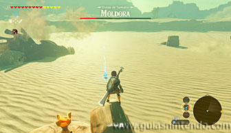
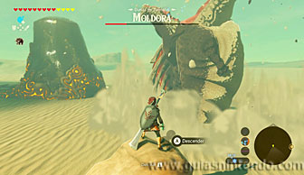
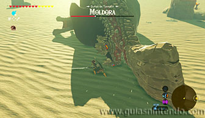
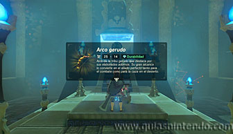

Puedes entrar en este santuario desde que llegas a la torre del cañón. Está en medio del desierto, al oeste de la Ciudadela Gerudo, en las Dunas de Turmalin.

Una vez que llegues a esta zona encontrarás unas antorchas apagadas en 4 montículos cercanos. Tienes que encenderlas para que la entrada del santuario aparezca (para lograrlo rápidamente usa flechas de fuego).

El problema que tendrás (aparte del calor, del que debes ir protegido con elixires o vestimentas especiales) es que esta parte del desierto está habitada por feroces moldoras. Estos enemigos son una especie de gusanos que se mueven bajo tierra, pero que al sentir la más mínima vibración salen al exterior buscando una presa. La mejor forma de vencerlos es lanzar bombas mientras te mantienes en alguna roca (sin pisar directamente la arena) y cuando él salga para tragarse la bomba, la hagas explotar.

Esto te dará unos segundos para que te acerques y puedas atacarla con cualquier arma. No es necesario que la derrotes para entrar en el santuario, pero si lo haces te será más fácil encender las antorchas.

Una vez dentro del santuario solo tienes que avanzar. En las escaleras verás un cofre que contiene un Arco gerudo. Ahora camina al altar para conseguir el símbolo de valía correspondiente.
